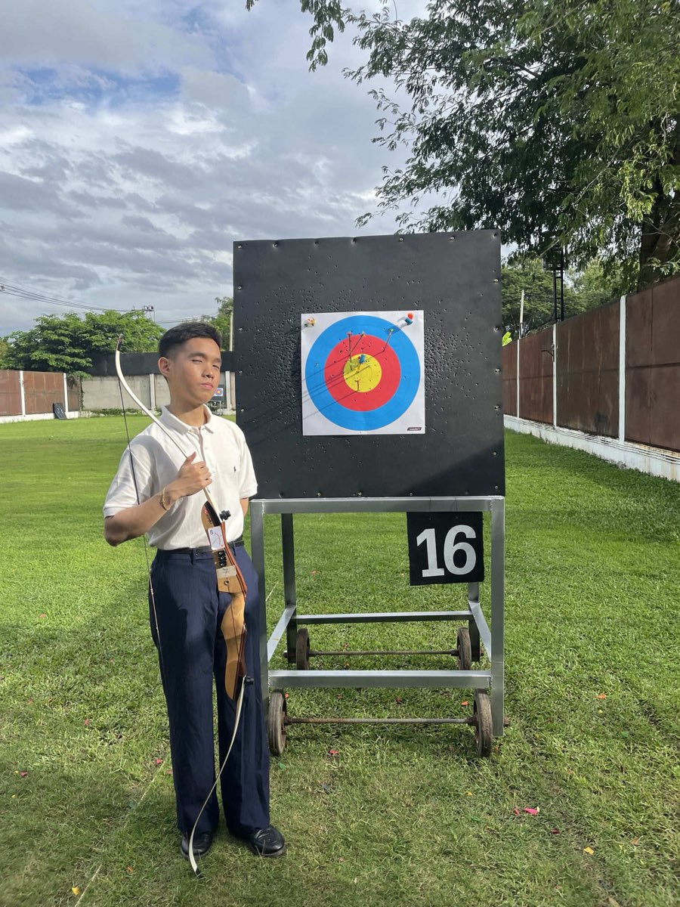
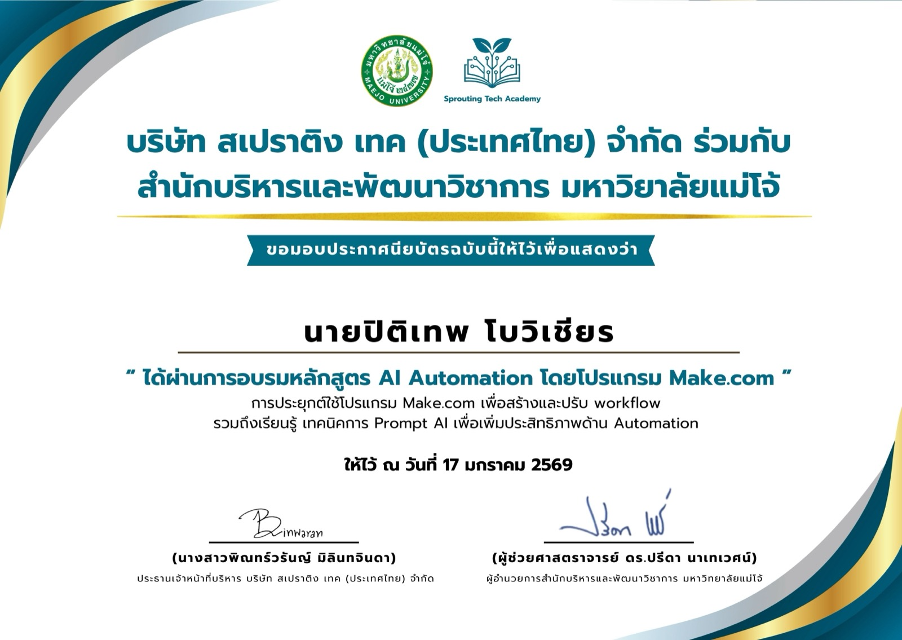
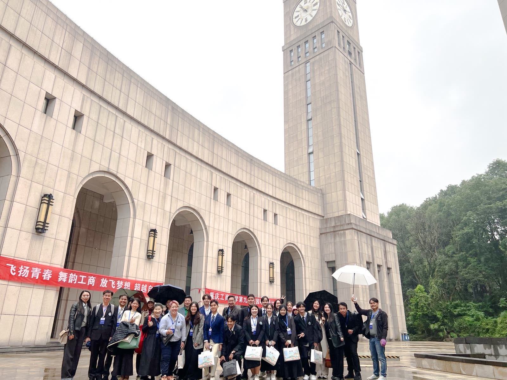
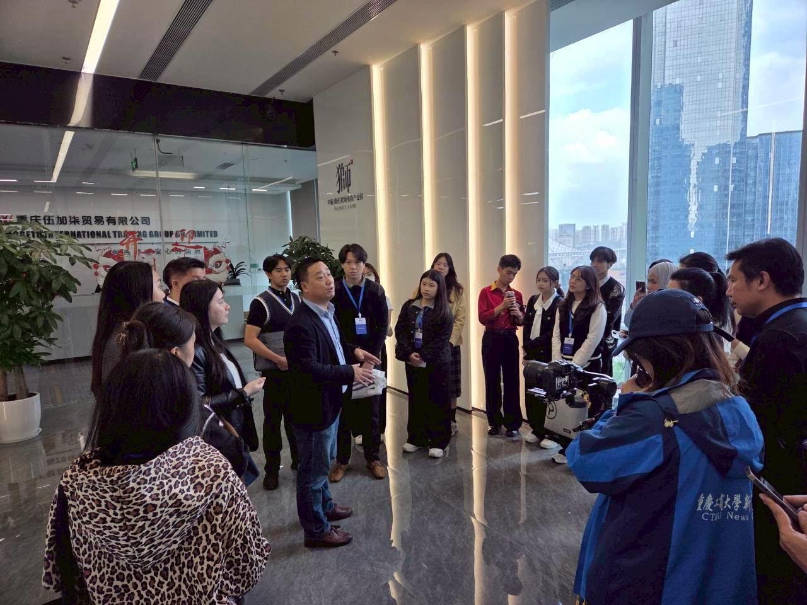
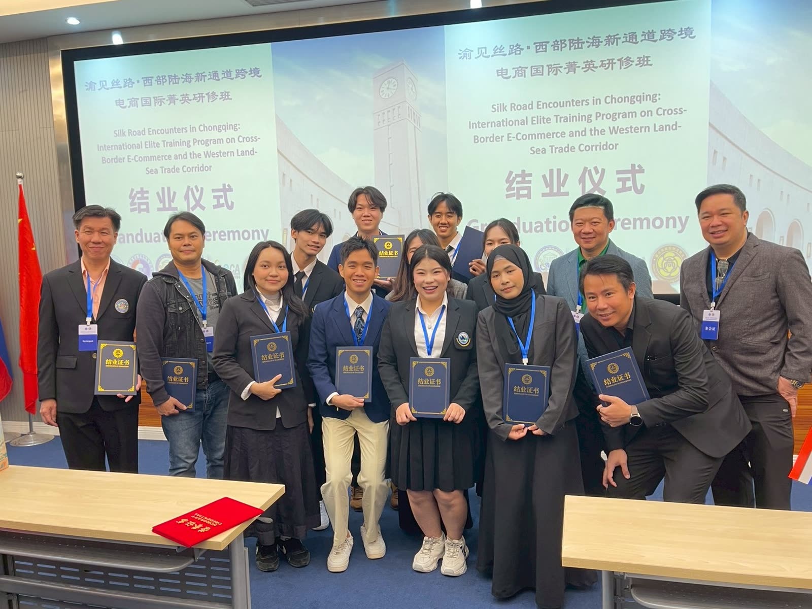
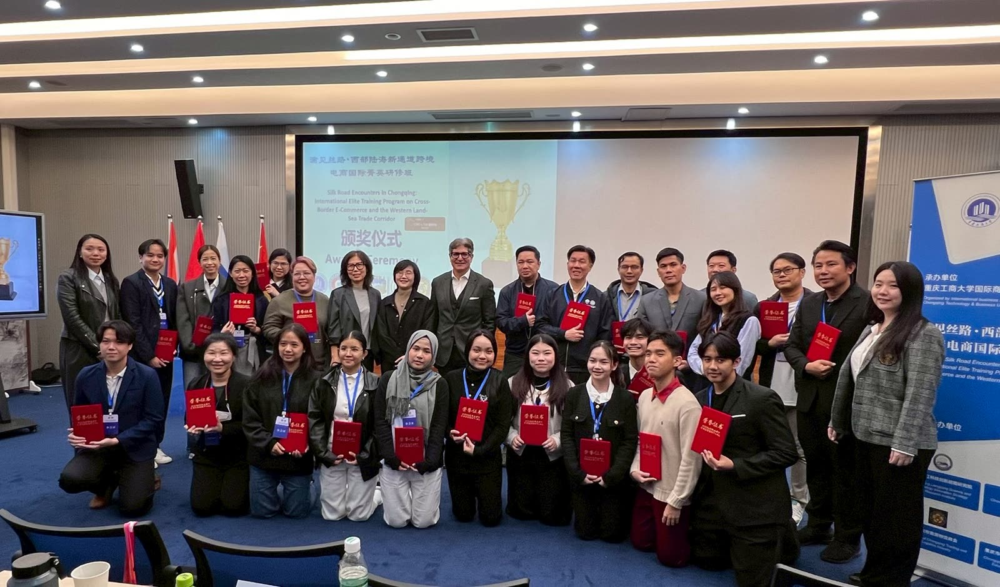
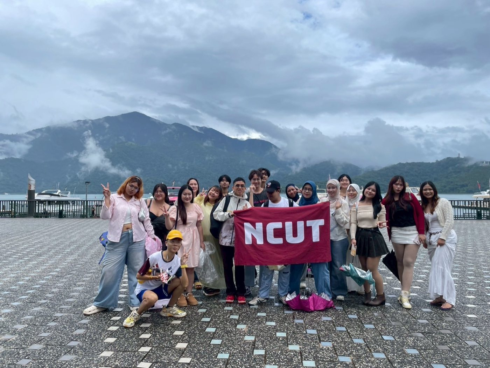
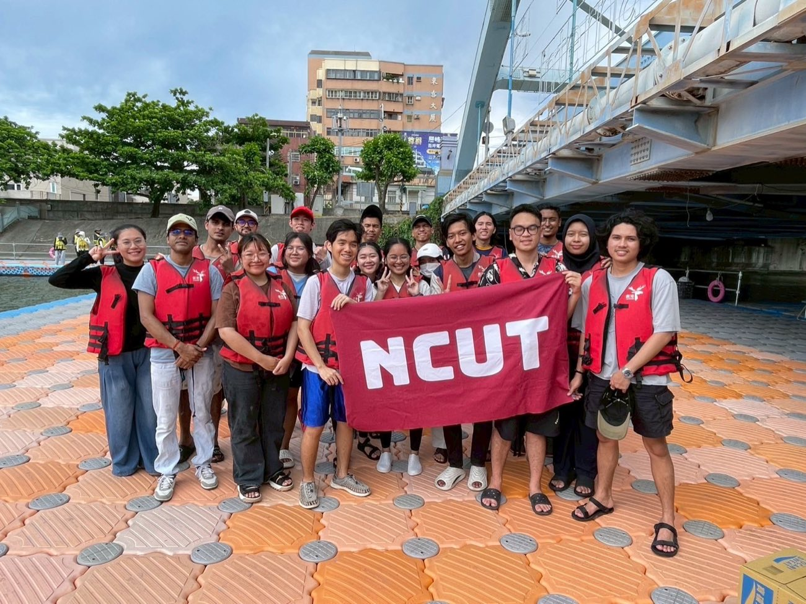

01
พัฒนาแอพ LaundryLift
จำลอง painpoint ธุรกิจร้านซักรีดที่ต้องการรระบบขนส่งผ้าลูกค้าไปส่งยังตามที่ต่าง อำนวยความสะดวกต่อลูกค้าและได้ค่าตอบแทนเพิ่ม
welcome..
ออกแบบระบบ AI agent อัตโนมัติและสร้างเครื่องมือใช้งานเองในตำแหน่ง Content Creator แก่บริษัทครอบครัว
‹ สวัสดีครับเรียกผมว่า "ทักทาย" นะครับ เป็นนึกศึกษาชั้นปี4 มหาวิทยาลัยแม่โจ้ คณะบริหารธุรกิจ ถึงจะเป็นเด็กบริหารแต่สาขาของผมเน้นไปด้านคอมพิวเตอร์ ภาษาโค้ด ฯลฯ นำมาผนวกกับการทำธุรกิจเหมาะมากกับการค้าขายยยุคนี้ ผมอาจไม่ได้เก่งหรือเชี่ยวชาญด้านใดด้านคอมเป็นเลิศ แต่ผมพร้อมเรียนรู้พยายามค้นหาสิ่งใหม่อยู่ตลอดด้วยตัวผมเองเพราะนั้นคือกำไรชีวิตที่ไม่มีวันขาดทุนครับ ›

ที่คิดว่าเฟี้ยวเงาะ กระเพาะปลา ที่สุด
01
จำลอง painpoint ธุรกิจร้านซักรีดที่ต้องการรระบบขนส่งผ้าลูกค้าไปส่งยังตามที่ต่าง อำนวยความสะดวกต่อลูกค้าและได้ค่าตอบแทนเพิ่ม
02
เข้าฟังอบรม ทำเวิร์คชอปแบบออนไซต์กับ โปรแกรม automation เบื้องต้น

03
เข้าฟังอบรม ทำเวิร์คชอปแบบออนไซต์กับ โปรแกรม automation เบื้องต้น


ฟังบรรยายธุรกิจที่สำนักงานบริษัทการค้าระหว่างประเทศในฉงชิ่ง ระหว่างทัวร์ดูงานบริษัทจริง


พิธีมอบรางวัลปิดโครงการร่วมกับผู้ประกอบการ คณาจารย์และวิทยากรของหลักสูตร
04
ร่วมหลักสูตรกำกับดูแลโดย คณาจารย์มหาวิทยาลัยแม่โจ้


05
ประเพณีแข่งเรือยาว Dragon Boat Festival และทริปร่วมกับนักเรียนต่างชาติที่ Sun Moon Lake ช่วงเป็นนักเรียนแลกเปลี่ยน ไต้หวัน
เขียนขึ้นเพื่อแก้ปัญหาหน้างานจริง ไม่ใช่งานฝึกหัด
มีงานคลิปคอนเทนต์ที่ผมให้ช่องร้านด้วยนะ กดเลยย
เฟส 1 — จากไฟล์ไลฟ์ดิบ ถึงคลิปต่อสินค้า
เฟส 2 — จากคลิปดิบ ถึงคลิปพร้อมโพสต์
สคริปพรอมพ์ปรับปรุงรูปใน GEM พร้อมกันด้วยคำสั่งเดียว
และปรับปรุงทักษะให้ดีขึ้น
ณ ปัจจุบันผมมีความสนใจด้าน Agentic AI มันทลายกำแพงข้อจำกัดในการเรียนโค้ดทั้งแต่ใช่ว่าจะสั่งแต่ AI อย่างเดียว นั้นคือจุดเปลี่ยนให้ผมต้องหันมาพัฒนาด้านภาษาโค้ด แอนจิเนียร์ เพื่อคุมมันให้ได้ผลลัพธ์ที่ต้องการ มิเช่นนั้นผมจะโดนมันคุมแทน 555 ผมเริ่มจากการลองผิดลองถูกและศึกษาตามยูทูปด้วยตนเอง ต่อให้มันทำความเข้าใจยาก..และคือเป้่าหมายผมที่ต้องขจัด
ตอนนี้ผมทำงานตัดต่อ Content creator ให้บริษัทเครื่องประดับครอบครัวตัวเองอยู่ ซึ่งค่อนข้างราบรื่นชิล ผมจะให้ที่บ้านผมจัดการเรื่องฝึกงานนี้ให้ก็ได้ แต่นั้นไม่ใช่สิ่งที่ผมต้องการ ผมเชื่อเรื่องการทลายออกจาก Safe zone เพื่อการเติมโต และมันจะมาถึงในไม่ช้า อยากให้พี่ HR ที่ได้เข้ามาชม Landing Page นี้.. โปรดรับไว้พิจารณาด้วยครับ หวังว่าจะได้ร่วมงานแชร์ประสบการณ์กับพี่ๆในองค์กรณ์ของท่าน แล้วพบกันครับ ›